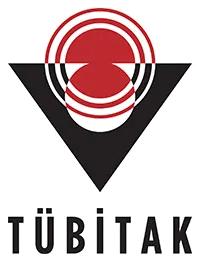
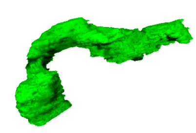
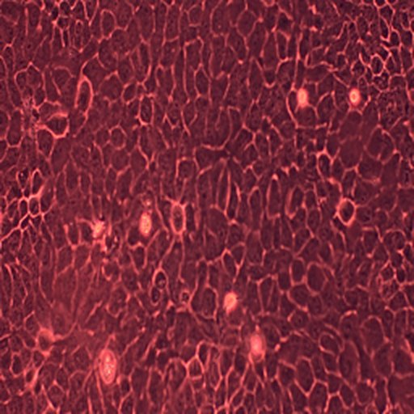
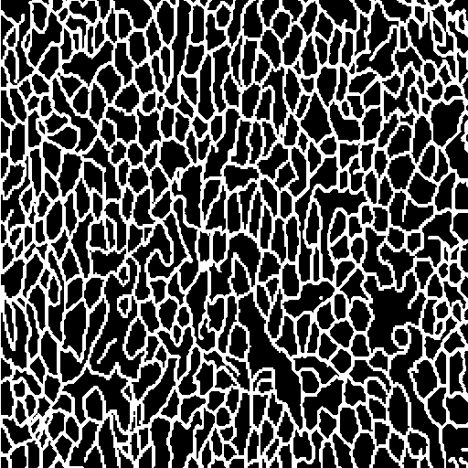
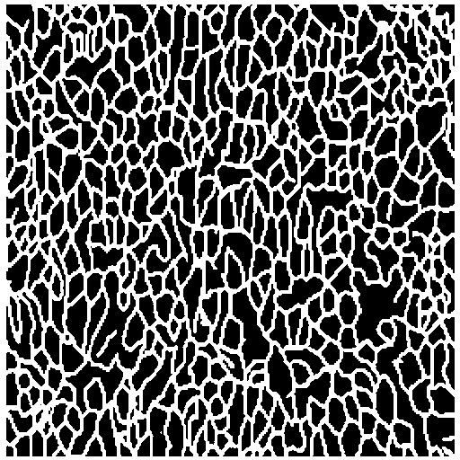
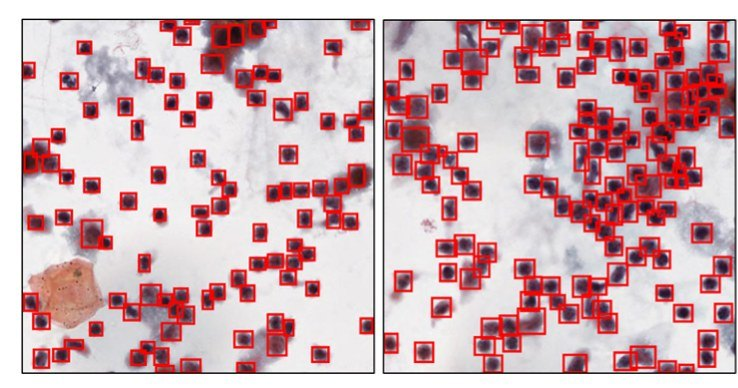
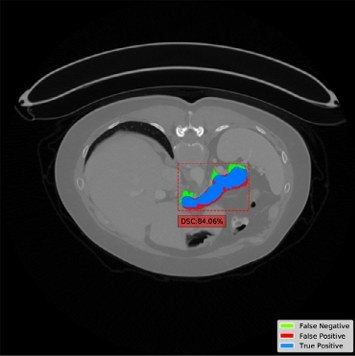
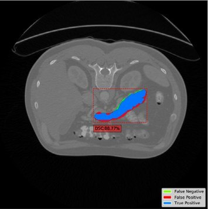
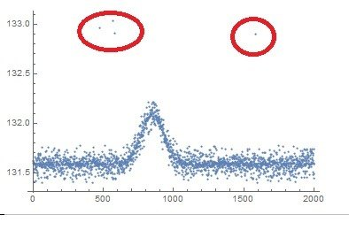

Doç. Dr. Hülya DOĞAN
Karadeniz Teknik Üniversitesi · Yazılım Mühendisliği

Bu etkinlik TÜBİTAK BİDEB 2237-A Bilimsel Eğitim Etkinlikleri Desteği Programı kapsamında desteklenmektedir.
tık: +1 · sağ tık: −1
Metni ve konuşmayı anında başka dile çevirir.
Soruları yanıtlar, metin yazar ve özetler.
Telefon kilidini açar, fotoğraflarda kişileri bulur.
Alışveriş ve film önerilerini tercihlerden öğrenir.
Sürücüsüz araçlar ve İHA’lar çevrelerini algılar.
Kartla yapılan şüpheli işlemleri anında yakalar.
Verilerden örüntü öğrenip tahmin ya da karar üreten bilgisayar sistemleri.
1970’lerin uzman sistemleri böyle çalışıyordu.
Binlerce geçmiş hastanın ölçümleri ve tanıları verilir; model aradaki ilişkiyi kendisi çıkarır.
Bu eğitimde “yapay zekâ” derken çoğunlukla bunu kastediyoruz.
Zekâ gerektiren işleri yapan bilgisayar sistemlerinin tümü; kural tabanlı uzman sistemler de buna dahil.
Kuralları açıkça yazmadan örneklerden öğrenen yöntemler; ör. lojistik regresyon, rastgele orman.
Çok katmanlı yapay sinir ağları. Görüntü ve sinyalde en güçlüsü; ama çok veri ister ve kararını açıklamak zordur.
Turuncu: sağlık ve yaşam bilimleriyle doğrudan ilgili kilometre taşları.
Görüntü ve sinyalden bulgu
Doğru hastaya doğru tedavi
Daha hızlı keşif
Göz dibi fotoğrafında diyabetik retinopatiyi tarar; sonucu, bir hekimin görüntüyü yorumlamasına gerek kalmadan verir.
FDA pazarlama izni, 2018
Proteinlerin 3B yapısını tahmin eder; 200 milyonu aşkın yapı açık veritabanında. 2024 Nobel Kimya Ödülü’ne konu oldu.
AlphaFold Protein Structure Database
Hedefi ve molekülü üretken YZ ile bulunan bir ilaç adayı; idiyopatik pulmoner fibrozda faz 2a çalışması yayımlandı.
Nature Medicine, 2025
| Yaş | Glukoz | VKİ | Diyabet |
|---|---|---|---|
| 54 | 160 | 31 | Var |
| 38 | 92 | 23 | Yok |
| 61 | 145 | 29 | Var |
| 45 | 99 | 26 | Yok |
Oyuncak model, yalnız fikir vermek için: gerçek bir klinik model değildir.
Özellik: modele verilen ölçüm (yaş, glukoz, VKİ)
Etiket: öğrenilmesi istenen sonuç (diyabet var ya da yok)
Zamanla ölçülen tek sıra sayı: her an için bir değer.
Her piksel bir sayı: satır ve sütunlardan oluşan bir tablo.

Üst üste dizilmiş kesitler: sayılardan oluşan bir küp.

a · GirişTers mikroskop görüntüsü

b · ETİKET (uzman)c · TAHMİN (model)Sevim, Doğan, Demir, Sezen ve Doğan · HaCaT hücre hattı segmentasyonu · KTÜ İLAFAR iş birliği
Eğitimde kusursuz, yeni hastada başarısız: soruları ezberleyen öğrenci gibi.
Eğitimde ve testte benzer başarı: model genel kuralı yakalamış.
Başka hastane, başka dönem, başka cihaz: asıl sınav budur.
Sağlıkta güvenin ölçüsü
🩺 Uzmanlık sınavında da daha önce görülmemiş vakalar sorulur.
💻 Test verisine bakarak yapılan her ayar, sonucu olduğundan iyi gösterir.
🔁 6 → 1: Kullanımda sorun görülürse döngü yeniden başlar.
5 dk grup çalışması · 3 dk paylaşım: iki grup sonucunu birer dakikada anlatır.
YZ kuralları örneklerden öğrenir; ancak örneklerin kalitesi kadar iyidir.
Model için her veri sayıdır: EKG bir dizi, mikroskop görüntüsü bir tablo, BT bir hacim.
Başarılı proje iyi tanımlanmış bir klinik soruyla başlar; sağlıkçı ve mühendis her adımda birlikte çalışır.
☕ Mola · 11:00’de Bölüm II: dengesiz veri ve açıklanabilir YZ. Soru: “%1’inin hasta olduğu veri setinde %99 doğruluk iyi mi?”
Dengesiz veri, açıklanabilir YZ ve KTÜ’den örnekler · Doç. Dr. Hülya DOĞAN
Herkese “sağlıklı” diyen bir model:
| 🩺 Hekimin dili | 💻 Mühendisin dili | Sorduğu soru |
|---|---|---|
| Duyarlılık | Recall | Gerçek hastaların yüzde kaçını yakaladık? |
| Özgüllük | Specificity | Sağlamların yüzde kaçını doğru eledik? |
| Pozitif kestirim değeri | Precision | “Hasta” dediklerimizin yüzde kaçı gerçekten hasta? |
| Prevalans | Sınıf oranı | Hastalık veride ne kadar yaygın? |
| ROC eğrisi altındaki alan | ROC-AUC | Model hastayı sağlamdan ne kadar iyi ayırıyor (eşikten bağımsız)? |
F1-skoru: kesinlik ile duyarlılığın dengeli ortalaması. Klinikte pek kullanılmaz ama dengesiz veride iyi bir özet verir.
Her senaryo için el kaldırın: kaçan vaka mı, yanlış alarm mı daha kötü?
Kaçan kanser mi, yoksa gereksiz ek tetkik ve biyopsi mi?
Kaçan sepsis mi, yoksa ekibi yoran sık alarm mı?
Toksik bir adayı geçirmek mi, yoksa umut vadeden bir adayı elemek mi?
Yanlış negatif: kaçan hasta · Yanlış pozitif: yanlış alarm
Hekim, gerekçesini görmediği bir öneriye dayanarak karar vermemeli.
Açıklama, modelin yanlış bir ipucuna yaslandığını kullanıma girmeden gösterir.
KVKK md. 11: kişi, yalnızca otomatik sistemlerle yapılan analizin aleyhine sonucuna itiraz edebilir. AB YZ Yasası, tıbbi YZ’de şeffaflık ve insan gözetimi ister.
Pnömoni tanıyan model, grafinin hangi hastaneden geldiğini de ayırt ediyordu. Başka hastanelerde başarısı çoğunlukla düştü.
Zech ve ark., PLOS Medicine 2018Bir model, astımlı pnömoni hastalarını “düşük riskli” saydı: bu hastalar doğrudan yoğun bakıma alındığı için daha az ölüyordu.
Caruana ve ark., KDD 2015Aynı farenin ardışık karelerini gören model %83 başarılı görünüyor; oysa hastalığı değil, fareyi tanıyor. Bunu birlikte yakalayacağız.
PCL-PASI demo alt kümesiHer vakada model gerçekte neyi öğreniyor olabilir? Nasıl önlersiniz? İpucu: verinin nasıl toplandığını düşünün.
Kötü huylu lezyonların fotoğraflarında çoğunlukla bir cetvel var. Model çok başarılı görünüyor.
Bazı hastaların 10’ar grafisi var. Görüntüler rastgele bölündü; aynı hastanın grafileri hem eğitimde hem testte.
İlaç uygulanan kuyuların hepsi 1. plakada, kontroller 2. plakada; plakalar farklı günlerde okundu.
Girdiler arasında “kan kültürü istendi” ve “antibiyotik başlandı” bilgileri de var.
| Vaka | Model neyi öğrendi? | Önlem |
|---|---|---|
| Cilt lezyonu | Cetveli: “cetvel varsa kötü huylu” | Standart çekim; modelin baktığı yeri görerek kontrol |
| Akciğer grafisi | Hastayı tanımayı (hasta düzeyinde sızıntı) | Veriyi hasta düzeyinde bölmek |
| Hücre kültürü | Plaka ve gün farkını (batch etkisi) | Her plakaya ilaç ve kontrol; rastgele yerleşim |
| Sepsis | Hekimin şüphesini | Yalnızca tahmin anında bilinen bilgiyi kullanmak |
Cetvel örneği: Narla ve ark., J Invest Dermatol 2018 · Benzer bir sepsis bulgusu: Kamran ve ark., NEJM AI 2024

Kırmızı kutular: modelin bulduğu hücre çekirdekleri.
Baykal, Doğan ve ark., Multimedia Tools and Applications, 2020


Kırmızı halkalar: aykırı değerler. Cihaz hatası mı, gerçek bir uç değer mi?Ölçüm yapılmamış ya da kaydedilmemiş: doldur ya da satırı çıkar.
Hata mı, gerçek bir uç değer mi? Kararı alanı bilen verir.
Aynı hasta ya da örnek iki kez girilmiş: teke indir.
Yaş 20–80, glukoz 70–300: aynı ölçeğe getir (normalizasyon).
Tablo verisini okur, temizler ve düzenler: Excel sayfasının Python’daki karşılığı.
Hazır modeller, başarı ölçütleri ve veri hazırlama araçları.
Tarayıcıda Python; kurulum yok, Google hesabı yeterli.
Dengesiz veride doğruluk yanıltır; duyarlılığa, kesinliğe ve F1’e bakın.
Eşik bir klinik karardır; sağlıkçı ve mühendis birlikte seçer.
Açıklama, kısa yolları model kullanıma girmeden yakalar.
| Terim | Sade anlamı | Örnek |
|---|---|---|
| Model | Veriden öğrenilmiş tahmin kuralı | Diyabet risk modeli |
| Özellik (X) | Modele verilen ölçüm | Yaş, glukoz, VKİ |
| Etiket (y) | Tahmin edilmesi istenen sonuç | Diyabet var / yok |
| Eğitim verisi | Modelin öğrendiği örnekler | Verinin yaklaşık %80’i |
| Test verisi | Sınav için ayrılan, modelin görmediği veri | Verinin yaklaşık %20’si |
| Aşırı öğrenme | Ezber: eğitimde iyi, yeni veride kötü | Eğitim %100, test %62 |
| Eşik | “Hasta” demek için gereken en düşük puan | 0,5 yerine 0,3 |
| Veri sızıntısı | Cevaba dair bilginin eğitime karışması | Aynı farenin kareleri hem eğitimde hem testte |
| Kara kutu | Kararını açıklayamayan model | Derin sinir ağı |
| Terim | Sade anlamı | Örnek |
|---|---|---|
| Prevalans | Toplulukta hastalığı olanların oranı | 100 kişide 1 hasta |
| Altın standart | Kabul görmüş en güvenilir tanı yöntemi | Biyopsi, kültür |
| Duyarlılık / özgüllük | Hastayı yakalama / sağlamı eleme oranı | Tarama / kesin tanı |
| Pozitif kestirim değeri | “Hasta” denenlerden gerçekten hasta olanlar | Prevalansa bağlıdır |
| Retrospektif / prospektif | Geçmiş kayıtlardan / ileriye dönük veri | Arşiv / yeni hastalar |
| Kohort | Zaman içinde birlikte izlenen grup | 2015–2020 diyabet hastaları |
| Etik kurul / HADYEK | İnsan / hayvan çalışması için zorunlu onay | Klinik veri / deney hayvanı |
| In vitro / in vivo | Hücre kültüründe / canlı organizmada deney | HaCaT kültürü / imikimod fare modeli |